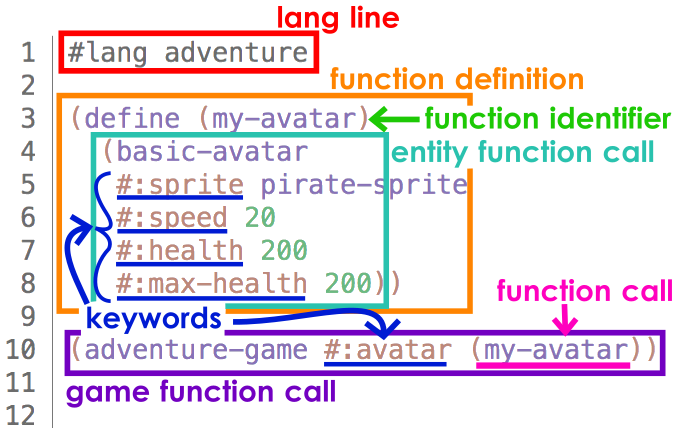
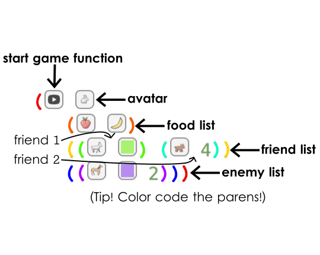
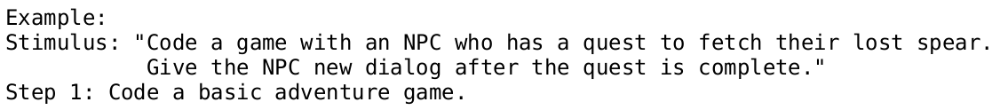
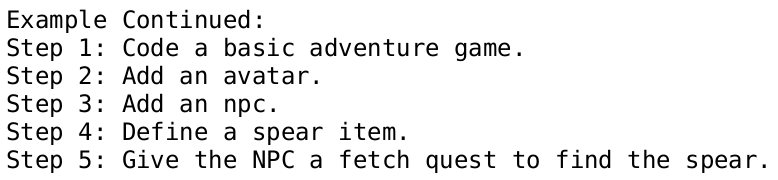

ThoughtSTEM Language Learning Tactics
1 Disintegrating Code
Chromebooks (1 per player)
Whiteboard and Markers
Challenge Card
Timer
Prep & Round 0
Write the stimulus of [the-challenge-card] onto [the-whiteboard].
Write the code of [the-challenge-card] onto [the-whiteboard].
Set [the-timer] for as many minutes as there are lines of code.
Tell [the-players] to type up the code from [the-whiteboard] onto [the-chromebooks].
Round 1
Erase 2-4 identifiers from the code on [the-whiteboard].
Tell [the-players] to erase all code from [the-chromebooks].
Tell [the-players] to type up the code again, using their memory to fill in the blanks.
Repeat!
Repeat Round 1, erasing more code each time until you are left with only symbols; then erase those too.
Call in the coach when you and the rest of the players are ready for your kata challenge. Pass the challenge to earn your kata.
2 Code Anatomy
Chromebooks (1 per player)
Whiteboard and Markers
Challenge Card
Timer
Label & Define
Write the code of [the-challenge-card] onto [the-whiteboard].
Label and define the parts of the code with help from the players.

Fill In The Blanks
Erase all code, leaving the labels, from [the-whiteboard].
Tell [the-players] to write the code back in, working as a team.
Repeat this phase until players have succeeded without help twice.
Final Quiz
Erase all code again, leaving the labels, from [the-whiteboard].
Set [the-timer] for as many minutes as there are lines of code.
Tell [the-players] to type up the code independently from memory.
Repeat this phase if needed.
Call in the coach when you and the rest of the players are ready for your kata challenge. Pass the challenge to earn your kata.
3 Reverse Engineering
Master Chromebook (1 for the Tactics Master)
Player Chromebooks (1 per player)
Whiteboard and Markers
Challenge Card
Timer
Deconstruct The Game
Type up the code of [the-challenge-card] onto [the-master-chromebook].
Run the game and show it to the players, while hiding the code.
Tell [the-players] to write a list of all the elements in the game onto [the-whiteboard].
Tell [the-players] to mark any elements they don’t know or have forgotten how to code.
Match Elements To Code
Give [the-challenge-card] to [the-players].
Tell [the-players] to match each element on their list to the code that creates that element and to also add any missing elements to their list.
Tell [the-players] to write any hints for the unknown elements onto [the-whiteboard].
Take back [the-challenge-card].
Round 1
Set [the-timer] for as many minutes as there are lines of code.
Tell [the-players] to type the code using just the list with hints.
Erase some hints from [the-whiteboard].
Tell [the-players] to erase all code from [the-player-chromebooks].
Repeat!
Repeat Round 1 until no hints remain and the players succeed.
Call in the coach when you and the rest of the players are ready for your kata challenge. Pass the challenge to earn your kata.
4 Building Up!
Chromebooks (1 per player)
Whiteboard/Paper
Whiteboard Markers/Pen
Challenge Card
Define The Process
Read aloud the stimulus of [the-challenge-card].

Write the first step onto [the-whiteboard/paper].

Coding Step By Step
Tell [the-players] to type up the code using the step-by-step process. Test after each step and then write their initials next to the step on [the-whiteboard/paper].
Call in the coach when you and the rest of the players are ready for your kata challenge. Pass the challenge to earn your kata.
5 Code Carousel
Chromebooks (1 per pair of players)
Whiteboard/Paper
Whiteboard Markers/Pen
Challenge Cards (3 that do not contradict)
Get Started
Write the stimuli of [the-challenge-cards] onto [the-whiteboard/paper].
Pair up all players. If there are an odd number of players, create a trio or a solo coder.
Round 1
Tell [the-players] to code a game that fits all three stimuli, working together with their partner on one chromebook.
Set [the-timer] for 45 seconds and start it as soon as the players start coding.
Rotate & Round 2
Stop all players from coding as soon as the timer ends.
Tell [the-players] to move to the chromebook to their right with their partner.
Tell [the-players] to continue with the code on this new chromebook.
Set [the-timer] for 45 seconds and start it as soon as the players start coding.
Repeat!
Repeat Rotate & Round 2 until all chromebooks have a running game that fits the stimuli.
Encourage players who have a completed game to add extra features until the round is over or the goal is achieved.
Call in the coach when you and the rest of the players are ready for your kata challenge. Pass the challenge to earn your kata.